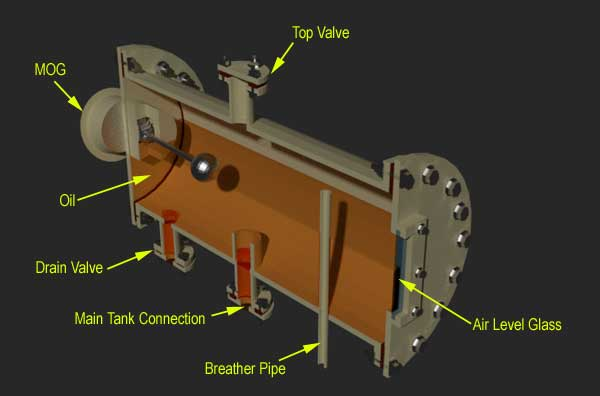
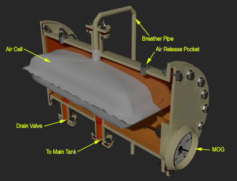
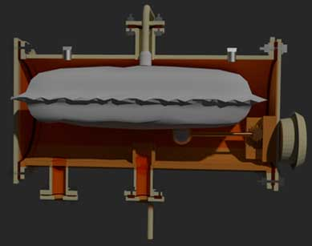

Conservator Tank of Transformer
Function of Conservator Tank
Construction
Working Principle
Atmoseal Type Conservator
Diaphragm Sealed Conservator
Conservator Tank of a Transformer
This is a cylindrical tank mounted on supporting structure on the roof the transformer main tank. The main function of conservator tank of transformer is to provide adequate space for expansion of oil inside the transformer.
Function of Conservator Tank of a Transformer
When transformer is loaded and when ambient temperature rises, the volume of oil inside transformer increases. A conservator tank of transformer provides adequate space to this expanded transformer oil. It also acts as a reservoir for transformer insulating oil.
Construction of Conservator Tank
This is a cylindrical shaped oil container closed from both ends. One large inspection cover is provided on either side of the container to facilitate maintenance and cleaning inside of the conservator.
Conservator pipe, i.e. pipe comes from main transformer tank, is projected inside the conservator from bottom portion. Head of the conservator pipe inside the conservator is provided with a cap. This pipe is projected as well as provided with a cap because this design prevent oil sludge and sediment to enter into main tank from conservator. Generally silica gel breather fixing pipe enters into the conservator from top. If it enters from bottom, it should be projected well above the level of oil inside the conservator. This arrangement ensure that oil does not enter the silica gel breather even at highest operating level.

Working of Conservator Tank
When volume of transformer insulating oil increases due to load and ambient temperature, the vacant space above the oil level inside the conservator is partially occupied by the expanded oil. Consequently, corresponding quantity of air of that space is pushed away through breather. On other hand, when load of transformer decreases, the transformer is switched off and when the ambient temperature decreases, the oil inside the transformer contracts. This causes outside air to enter in the conservator tank of transformer through silica gel breather.
Atmoseal Type Conservator
In this type conservator of transformer, an air cell made of NBR material is fitted inside the conservator reservoir. The silica gel breather is connected at the top of this air cell. The oil level in the power transformer rises and falls according to this air cell deflated and inflated. When the air cell gets deflated the air inside the air cell comes out via breather and on the other hand if the cell is inflated the outside air comes in through breather.
This arrangement prevents direct contact of oil with air, thereby reduces ageing affect of oil.
|  |  |
The space available outside the cell in conservator tank is totally filled by oil. Air vents are provided on the top of the conservator for venting accumulated air outside the air cell.
The pressure inside the air cell must be maintained 1.0 PSI.
Diaphragm Sealed Conservator
Here diaphragm is used as a barrier between transformer oil and atmospheric air. In this case the conservator of transformer is made of tow semicircular halves as shown below.
Diaphragm Conservator
The diphram is held between the the two halves and bolted. As oil expands it pushes up the diaphragm. The position of the diaphragm is indicated by the oil level indicator i.e. magnetic oil gauge (Here MOG is not shown in the figure above) as the rod of this MOG is connected to the diaphragm. When the oil level falls down in the conservator, the diaphragm deflects and the atmospheric air fills the vacant place. This air is sucked through silica gel breather which is connected to the top middle of conservator tank of transformer. (Here silica gel breather is not shown in the figure above)
This type of conservator has one advantage over air cell conservator. If gas is pressurized to a high level, it gets dissolved in oil. Over a period of time the amount of gas in oil reaches the saturation point. If at this stage, the load of transformer is suddenly dropped or the ambient temperature falls severely, the pressure falls, oil becomes supersaturated and the gas bubbles will be evolved. If there is a pimp connected in the cooling circuit, it will help generating bubbles. These bubbles may cause insulation failure in the region of strong fields. (Here silica gel breather, MOG, Drain Valves, Air Pockets, Conservator to main tank connections are not shown in the figure above)
 by
by